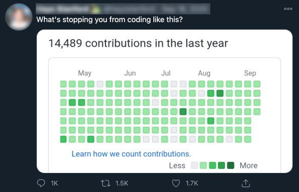

About this project
It all started with a tweet
Some replies pointed out that GitHub contribution graphs are irrelevant, in the sense that they don't inform on how good we are as a developer nor the quality of our contributions.
This tweet stuck with me.
When I was looking for a project to practice my learning of HTML, CSS and JavaScript, I thought it would be fun to push the irrelevance even further by planning ahead GitHub contributions to draw stuff on the graph.
Well, it's all fun and games until someone draws a really?.
Blood, sweat and tears (of joy)
Here's what I've learnt. Click on for more details.
- Element focus styling for accessibility
- Fancy selectors (select elements with attribute=x, with id y, only an element's first child, etc
- SVG styling (some properties can be specified in CSS directly)
- CSS transitions
- Font Awesome icons
- Responsiveness: flexbox, media queries and image srcset
- How to navigate the DOM
- Events
- File web API
- Visual Studio Code: how to speed up my work with Emmet, ESLint, CSS Flexbox Cheatsheet
- Node.js and npm
- Firebase hosting and Firebase CLI
- VoiceOver screen reader to test accessibility
- Adobe Illustrator for the logo
- Prism to highlight language keywords in <code> elements
- Luxon for the dates
- iCalendar data format
- caniuse.com to check browser support of web features
... among other things!
Details worth mentioning
Semantic HTML
Not only can anyone understand the structure of a page at first glance but a browser and a screen reader too so your semantic HTML elements can benefit from that. For instance, a div representing a button won't be clickable, a button will, automatically!
Here's the basic layout I've chosen:
<header>
<nav>
<ul>
<li><a>[...]</a></li>
<li><a>[...]</a></li>
<li><a>[...]</a></li>
</ul>
</nav>
</header>
<main>
<h1>[...]</h1>
<section>
<h2>[...]</h2>
<figure>
<div class="overflow">
<svg role="grid">
<g role="row">
<text role="columnheader">[...]</text>
[...]
</g>
<g role="row">
<text role="rowheader">[...]</text>
<rect role="gridcell"/>
[...]
</g>
</svg>
</div>
<figcaption>[...]</figcaption>
</figure>
<ul>
<li><button>[...]</button></li>
<li><button>[...]</button></li>
<li><a role="button">[...]</a></li>
</ul>
</section>
</main>
<footer>
<ul>
<li>[...]</li>
<li>[...]</li>
<li>[...]</li>
</ul>
</footer>At first, I used a table for the GitHub graph. Then, I had a look at GitHub.com and saw they were using a bunch of SVG rectangles for that. I thought it was a great opportunity to learn SVG so I did the same. However, in a real project, a table is preferrable because this is exactly what the GitHub graph is and it is semantically better.
When I could not use a semantic HTML element, I used specific ARIA roles so that the screen readers can at least make sense of them. I used one div to handle the overflow of the grid upon resizing.
My infinite gratitude goes to:
Download attribute
I used the download attribute on an anchor for saving the icalendar file generated on the fly. For this specific action, I wanted to have a button, which makes more sense to me than just an anchor. I used the role "button" on the anchor and I styled the anchor so that it looks like a button.
I wanted the buttons to be disabled by default because the associated actions make no sense when the graph is untouched. For the anchor, I had to create a dedicated CSS class to style it as a disabled button. I also had to simulate the disability: I set the tabindex to -1 so that it cannot be selected using the keyboard. Those are automatically done when a button element has the disabled attribute.
<a class="disabled" role="button" tabindex="-1" download></a>button, [role="button"] {
[...]
}
button:disabled, [role="button"].disabled {
pointer-events: none;
[...]
}Then, because I use an anchor and not a button, I had to simulate how a button normally behaves: I had to code the onclick and onkeydown (to capture the space key) callback functions. The onclick generates the iCalendar file and set the href attribute to the URL generated on the fly that points to the generated iCalendar file.
const saveAsCalButton = document.getElementById("save-as-calendar");
saveAsCalButton.onclick = (event) => {
event.target.href = generateCalendarFile();
}
saveAsCalButton.onkeydown = (event) => {
switch(event.key) {
case " ":
event.target.click();
break;
default:
return;
}
}My infinite gratitude goes to:
Dark/light-themed SVG favicon
I added a SVG favicon but didn't like the way it looked in dark mode. Using @media (prefers-color-scheme: dark) it's possible to change the SVG fill color! Pretty awesome!
<svg xmlns="http://www.w3.org/2000/svg" viewBox="0 0 110.18 107.46">
<defs>
<style>
.icon {
fill: black;
}
@media (prefers-color-scheme: dark) {
.icon {
fill: white;
}
}
</style>
</defs>
<path class="icon" d="M55.09,0A55.1,55.1,0,0,0,37.68,107.37c2.75.5,3.76-1.2,3.76-2.66,0-1.3,0-4.77-.08-9.37C26,98.67,22.81,88,22.81,88c-2.51-6.37-6.12-8.06-6.12-8.06-5-3.42.38-3.35.38-3.35,5.53.39,8.44,5.68,8.44,5.68,4.91,8.42,12.89,6,16,4.58A11.76,11.76,0,0,1,45,79.44c-12.24-1.39-25.1-6.12-25.1-27.23a21.31,21.31,0,0,1,5.67-14.78c-.56-1.39-2.45-7,.54-14.58,0,0,4.16-1.32,13.53,4.59l.24-.9c-7.26-4-11.52-8.68-10.51-12.45C31,8.18,44.89,6.75,60.46,10.91c7.95,2.13,14.8,5.3,19.39,8.68a39.37,39.37,0,0,1,5.22-3.65,2.45,2.45,0,1,1,2.45,4.24c-.75.44-1.49.9-2.21,1.39l-1,.71-.14.11c11.77,7.45,19.08,15.86,16.85,20-1.3,2.39-5.59,2.85-11.44,1.67l-.37,1.39a22.43,22.43,0,0,1,1,6.8C90.23,73.38,77.35,78,65.08,79.4c2,1.7,3.74,5.06,3.74,10.2,0,7.36-.07,13.31-.07,15.11a3,3,0,0,0,.41,1.52l8.58-14.8a5.69,5.69,0,0,1-.84-1.53,5.35,5.35,0,0,1,1-5.4c1.43-1.48,3.64-1.33,5.2-2.56a5.3,5.3,0,0,0,2-4.43,1.25,1.25,0,0,1,1.27-1.36h0C88.89,75,90,78.71,90.39,80.37a16.09,16.09,0,0,1,.27,6.26c-.34,2.25-1.15,4.63-3.07,6a7.68,7.68,0,0,1-4.68,1.29l-7.09,12.23A55.1,55.1,0,0,0,55.09,0Z"/>
</svg>Favicon as SVG is not yet fully supported so it's always good to use a good ol' icon as a backup
<link rel="icon" type="image/svg+xml" href="./assets/icon.svg">
<link rel="alternate icon" href="./assets/favicon.ico">My infinite gratitude goes to:
Accessibility best practices, ARIA labels and roles
I read the excellent MDN Web Docs guide about accessibility and then I unplugged my mouse. This is when I realized the GitHub graph was not accessible using my keyboard at all. I fixed it by adding tabindex="0" to the gridcells. I also added some ARIA roles to some HTML elements. where it made sense: for instance, the anchor element for downloading a calendar version of the graph has the role="button".
I also realized that the navigation in the grid was just nerve-wracking with a keyboard, pressing tab to go from one gridcell to another, so I decided to implement a navigation with arrow keys and the possibility to press Enter or Space to click on a gridcell.
My infinite gratitude goes to:
Element focus styling for accessibility
I noticed a weird outline around my buttons in Chrome whenever I clicked on them. The outline stayed. I sure didn't like this look! My first reaction was to remove the outline all together but fortunately some people on Stackoverflow were quick to remark this outline has a crucial utility! It makes the element where the focus is stands out. I thus opted to change the style of focused elements, which is very easy to do.
*:focus {
outline: 3px solid rgba(21, 156, 228, 0.4);
}For the rounded buttons, I opted for a box-shadow styling.
button:focus, [role="button"]:focus {
outline: none;
box-shadow: 0 0 0 3px rgba(21, 156, 228, 0.4);
}VoiceOver screen reader to test accessibility
Who knew using a screen reader was as easy as pressing CMD + F5 on a Mac. Then I just followed the guide to learn how to use it and ran it on my web page. Needless to say that there were plenty of issues to fix because I decided to learn about accessibility only after coding the project. Accessibility should be integrated and tested right from the beginning!
One change I did is to add the role="alert" to the HTML elements whose content changes regularly when the user navigates the grid, i.e. the gridcell date and contribution effort. This way, the date and contribution effort are considered right away by the screen reader.
<text id="hovered-date" class="tooltip" role="alert" x="30" y="12"></text>
[...]
<text id="energy-label" class="tooltip" role="alert" text-anchor="end" x="124" y="37"></text>My infinite gratitude goes to:
Adobe Illustrator for the logo
I downloaded the mark directly from GitHub (thanks GitHub!). Then I used Abode Illustrator to add a cute painter cap and a brush to the mark, and export it as a SVG.